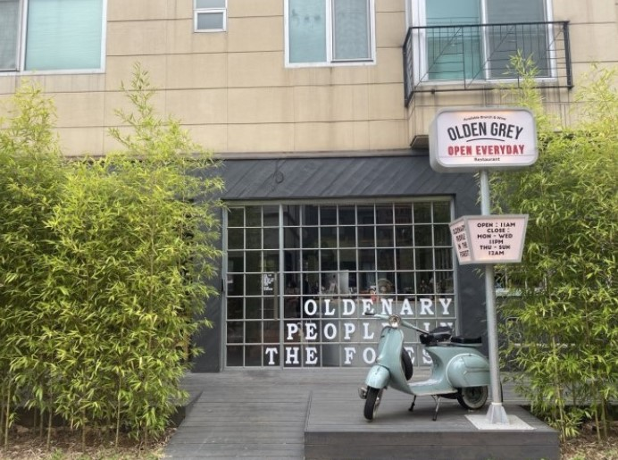
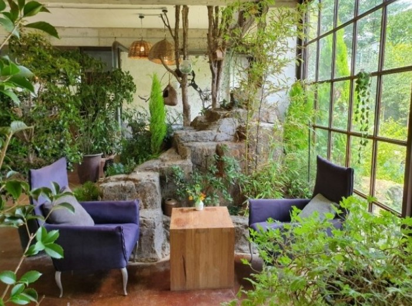

판교 카페
첫페이지로 돌아가기
올덴브라운
인스타감성으로 최근 핫해진 삼평동 카페거리 인근의 카페. 야외와 연결된 카페 내부 좌석은 청량한 느낌을 들게 함
이 곳의 시그니처는 아인슈페너 이며 옆가게 올덴그레이에서 식사를 주문해 먹을 수도 있다.
영업시간 : 10:00~23:00
위치 및 전화번호 : 백현동 592-4 / 070-4155-1960

그린노트
고기리 근방에 위치한 근교 카페. 아직은 알려지지 않아 한적하며 이름답게 풀과 나무를 키우는 정원 컨셉을 갖추고 있는 카페이다.
음료와 사이드 메뉴가 적어 살짝 아쉬움
영업시간 : 10:30~22:00
위치 및 전화번호 : 석운동79-20 / 031-705-4567
